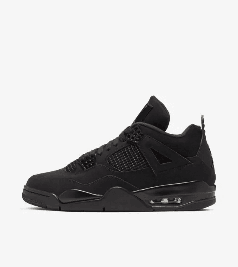
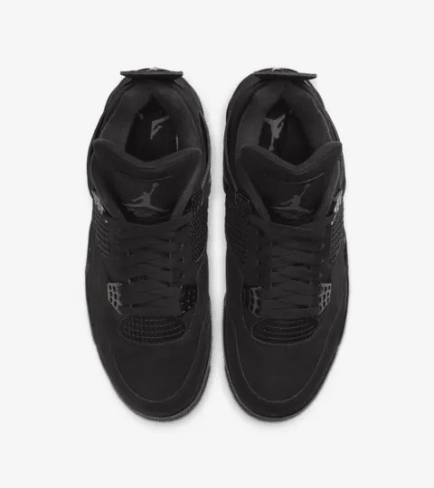
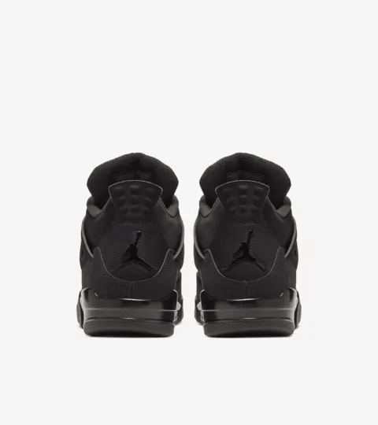
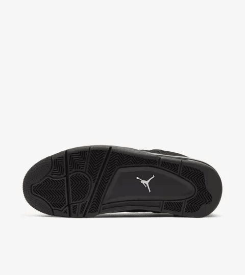

The Air Jordan 4 Black Cat is a highly regarded sneaker that exemplifies the blend of performance and style that has made the Jordan brand a household name. First released in 2020, this colorway pays homage to the iconic Air Jordan 4 silhouette, originally designed by Tinker Hatfield in 1989. The Black Cat features a sleek black suede upper, accented with tonal black mesh and subtle hints of gray, giving it a sophisticated yet bold look.
The Air Jordan 4 is celebrated for its innovative design elements, including the unique winged lace locks and the visible Air unit in the heel, which provide both support and cushioning. The Black Cat variant enhances these features with its all-black color scheme, making it an ideal choice for those who appreciate understated elegance. This sneaker is versatile, easily pairing with a wide range of outfits, whether for casual wear or more upscale occasions.
The nickname "Black Cat" is a nod to Michael Jordan's nickname, reflecting his prowess on the court and his mystique as a player. The sneaker embodies the spirit of the legendary athlete, showcasing the performance attributes that made the Air Jordan line a favorite among basketball players and sneakerheads alike.
Since its release, the Air Jordan 4 Black Cat has gained a cult following, with many fans drawn to its striking design and the legacy it represents. Its combination of style, comfort, and connection to Michael Jordan's illustrious career makes it a must-have for any sneaker collection. The Black Cat not only pays tribute to the past but also continues to influence the present and future of sneaker culture.
   